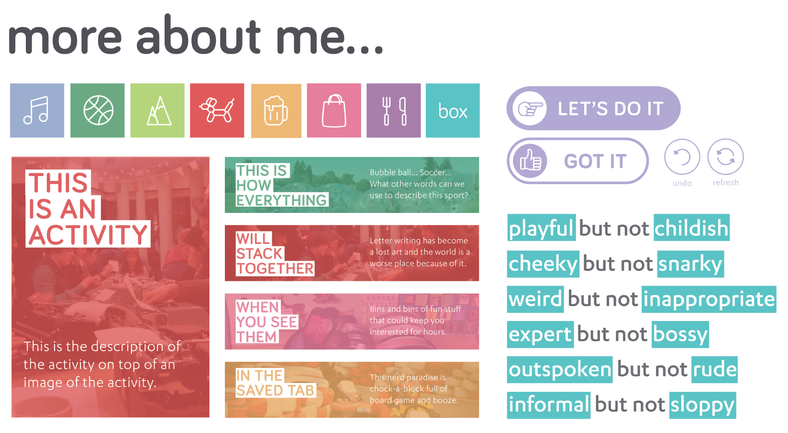

Fillip.
A mobile application designed to help people decide on activities to do in the moment, by making relevant and personalized suggestions.
ROLES: Ideation, Research, UI, IxD, UX, Motion Graphics.
Identifying Opportunities.
ANTICIPATORY DESIGN. The group began by identifying a sector with an opportunity for design intervention. We were inspired by the concept of anticipatory design, and removing unnecessary choices to someone’s day and preventing the well-documented phenomenon of decision fatigue: meaning the more things we decide on over the course of a day, the less ability we have to make effective decisions. We saw potential to apply the concept of anticipatory design to fulfill a missing need of individuals living in urban areas. We found that across cities, people were experiencing friction when trying to come up with ideas for fun and interesting things to do.
INSPIRATION AND PRECEDENTS. Websites like VancityBuzz and city government websites collect lists of events and activities in the city, but they are presented to individuals as merely a list format, with no ability to filter or create personalized suggestions. It becomes very difficult to sort through these large lists and find interesting things to do, and individuals may end up giving up and feeling bored once again.
Research Analysis.
PERSONAS. The team began the process by creating personas to help identify the goals, needs, and concerns of potential application users. This consisted of conducting interviews with a variety of individuals we believed may be interested in this style of mobile application. Information gathered from these interviews were then analysed and translated into different personas. Two examples are below.

PRINCIPLES. The team then ideated a set of principles based on the goals and needs of our personas that would inform any interface and design decisions. By staying within the constraints of these principles, we could ensure that the application was always being designed with our user’s goals and needs in mind.
ANTICIPATORY. As our users want a personalized experience, Fillip should anticipate relevant activities based on user’s history.
AUTONOMOUS. As our users aspire to make their own decisions, Fillip should give them resources, and act as a catalyst to find activities.
DELIGHTFUL AND PLAYFUL. As our users are lighthearted and spontaneous, Fillip should have a personality to match this, using a voice and tone guide.
EFFICIENT. Our users are busy individuals who want to be spontaneous with any free time they have, so Fillip should maximise their productivity when finding activities.
SOCIAL. Our users seek to spend quality time with their friends and family, so Fillip should help promote this while not getting in the way during the activities themselves.
LOW RESISTANCE. As our users want to make quick decisions, Fillip should provide them with just enough information without an abundance of content.
JOURNEY FRAMEWORK. A journey framework was then created with these principles in mind.
CLICK TO ENLARGE
App Creation.
FINAL INTERFACE. Below are high-fidelity mockups of the final interface iteration, to help in illustrating the user's journey.
HOMESCREEN. Beginning from the homescreen, the application allows for simple filtration to only anticipate activities that are feasible for the user to do in that moment.

CHOOSING ACTIVITIES. The more a user uses Fillip, the more it can anticipate and learn things that they will like. To try to prevent endless scrolling and swiping, we studied cognitive techniques to encourage choosing an activity. Placing two activities next to each other and choosing one over the other proved to be the most effective way to encourage snap decisions and spontaneity.
ACTIVITY DETAILS. The Activity Details page provides additional information and context, to bring aspirational activity ideas into reality. Activity write-ups are described succinctly and thoughtfully using Fillip's easygoing language, to help users in deciding whether this activity is the right fit for them.

CONFIRMATION SCREEN. Fillip provides sufficient feedback before users are committed to an activity. Furthermore, inviting friends, via the app or with a quick curated text message on behalf of the user, allows Fillip users to further embrace the delightful spontaneity that the application affords.
SAVE FOR LATER. Fillip recognizes that sometimes activities may sound appealing for later, just not in the moment. To facilitate and encourage users to return to the application at a later date, the Saved for Later screen will ensure that users will continually and consistently use Fillip as a reference whenever they need to come up with ideas.
PROFILE. Fillip's profile page allows users to connect with their friends, and review activities they've done in the past. After user testing, we realized that users were seeking a simple profile page that merely supported the cataloging of all the fun activities done through the app
Process.
INITIAL WIREFRAMES. These gray box wireframes allowed the team to conduct initial evaluations of the interface design. For example, each member of the team conducted a heuristic evaluation, which illuminated problems with an excess of information and a lack of minimalist design.


USER TESTING. The interface was then fully prototyped and several rounds of usability testing were conducted to allow for refinement and to solve any usability problems. We had participants walk through several tasks using the prototyped application and employed the think-aloud protocol. This, combined with a pre- and post-test questionnaire helped to establish problem areas. We found that our color usage was repetitive, our button hierarchy needed to be improved, the decision-making needed to be simplified, and the implementation of providing users achievements was unnecessary and confusing (and was therefore removed). See mockups tested below:

MY ROLES. Throughout the course of this process, I acted as project manager of the team. Not only did I participate in the creation and ideation of personas, principles, wireframes, prototypes, and testing, I was also in charge of delegating roles for groupmates and ensuring that any design elements remained consistent across screens being designed. Furthermore, I was in charge of all content and copy creation, and designed the Activity Decision screens. I also created all motion graphics for the final video proposal.
Design Decisions.
Style Guide. After the completion of user testing, the final prototype of the application was completed. For every step of the application, we wanted it to be as simple and straightforward as possible for users to move through the system but still allow for customization. Below is the style guide that informed the final interface design decisions:.
FURTHER DESIGN DETAILS.
VOICE AND TONE. Fillip's language is lighthearted, playful, and a little bit sassy. The application is intended to feel like a knowledgable friend, making suggestions feel more authentic.
COLORS. Bright colors were used to echo the playful nature of Fillip. Each category of activity is separated into a different color, to allow for subtle differentiation.
ENCOURAGING DECISIONS. Fillip is also designed to help accomodate decision making with a group of people who all use the application. If swiping as a group, Fillip will choose a small selection of activites and display these seperately to each user. Fillip will then show everyone the activities that the most people were interested in.